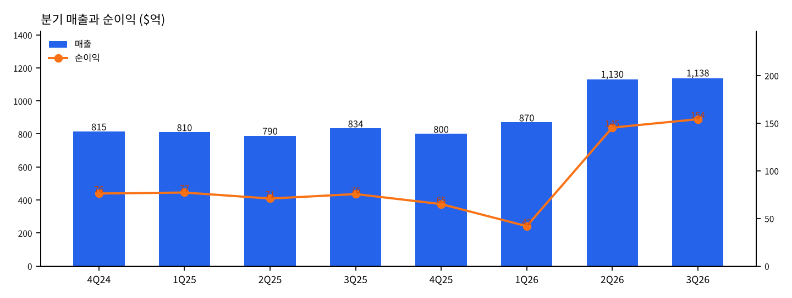
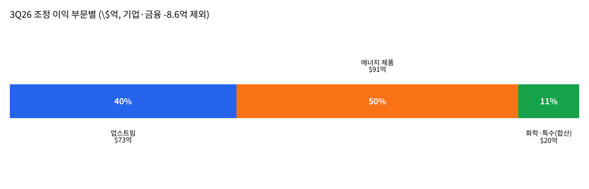
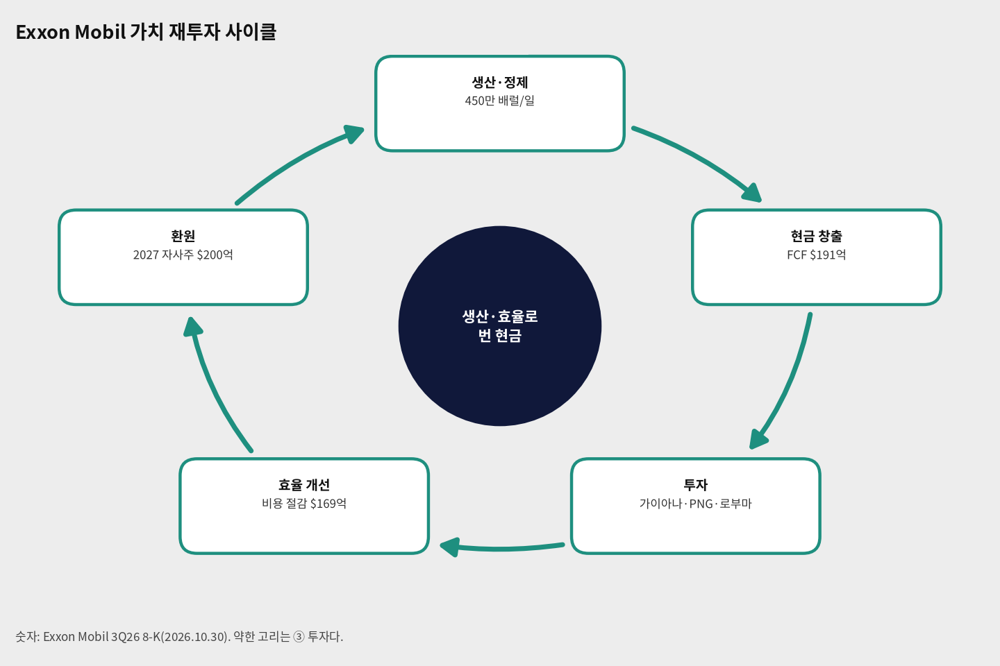

Exxon Mobil은 원유·천연가스를 개발·생산하고 정유·화학·특수제품까지 이어지는 통합 에너지 기업이다. 이번 분기 이익은 정제마진 급등이 끌어올렸고, 업스트림은 유가 하락과 가이아나 권리분 효과로 줄었다.
| 항목 | 내용 |
|---|---|
| 종목 | ExxonMobil (XOM) · NYSE · 에너지(통합 석유) · 텍사스 스프링 |
| 멀티플 | PER·P/S는 08·09 항목 표 참조(2026.11.19 종가 기준) |
| 최근 분기(3Q26) | GAAP 이익 $154억(EPS $3.72), 조정 이익 $175억(EPS $4.23), 영업현금흐름 $257억 |
| 주주환원 | 3Q 배당 $43억 + 자사주 $51억, 2027 자사주 $200억 계획, 4Q 배당 $1.07 주당 |
| 직원 수 | 약 58,000명(트레이딩뷰) |
| 직책 | 인물 | 역할·특징 |
|---|---|---|
| CEO | 다렌 우즈(Darren Woods) | 회장 겸 CEO. 3Q 보도자료에서 생산 증가와 효율 개선, 구조적 비용 절감 $169억을 강조 |
| CFO | 캐시 믹겔스(Kathy Mikells) | 주주환원·순부채 축소 설명(확인 필요: 직책은 최근 공시 기준) |
경영 스타일: '장기 투자 규율과 비용 구조 개선'. 가이아나·퍼미안·정제 설비에 투자하면서 구조적 비용 절감 $169억을 누적했다고 밝혔다. 파푸아 LNG 지분을 34%로, 로부마 지분을 50%로 늘리는 합의도 이번 분기에 발표했다.
미국 걸프 연안 정유소 원유 증류 설비 가동률 100%, 디젤 생산 역대 2위(회사 발표).
생산을 늘리면서 비용을 낮추는 '질적 개선'을 강조한다. 가이아나·카이어(Kearl) 누적 생산 10억 배럴 달성.
다음 실적발표는 세 가지 질문에 답하는 자리다.
1. 정제마진 효과가 4Q에도 이어지나?
2. 업스트림 이익이 유가 하락 속에서 버티나?
3. 자사주 매입 $200억을 현금흐름이 뒷받침하나?
한 줄 판정 규칙: 첫 질문(정제마진 유지)과 둘째 질문(업스트림 하락폭)이 모두 양호하면 약한 고리(업스트림 이익 감소)가 풀린다. 첫째만 좋으면 마진 의존이 남는다.
일정: 4Q26 실적 발표일은 트레이딩뷰 기준 2027.02.02(확인 필요: 회사 공식 발표 전 예상일). 연간 자사주 계획은 2027년 $200억이다.
| 분기 | 매출 | 순이익 | EPS | 조정 EPS | 특이 사항 |
|---|---|---|---|---|---|
| 4Q24 | $815.1억 | $76.1억 | 1.72 | 1.67 | |
| 1Q25 | $810.4억 | $77.1억 | 1.76 | 1.76 | |
| 2Q25 | $789.6억 | $70.8억 | 1.64 | 1.64 | |
| 3Q25 | $833.6억 | $75.5억 | 1.76 | 1.88 | |
| 4Q25 | $800.4억 | $65.0억 | 1.53 | 1.71 | |
| 1Q26 | $869.6억 | $41.8억 | 1.00 | 1.16 | |
| 2Q26 | $1,130.3억 | $145.3억 | 3.48 | 3.52 | 조정 EPS $3.52 |
| 3Q26 | $1,138.0억 | $154.1억 | 3.72 | 4.23 | 조정 EPS $4.23 · 정제마진 급등 |
3Q26 GAAP EPS $3.72, 조정 EPS $4.23(회사 8-K, 2026.10.30). 매출·순이익·EPS(GAAP 희석)는 트레이딩뷰 스캐너, 조정 EPS는 트레이딩뷰 실적 페이지의 Reported 값이다. 분기 정렬은 오래된 분기→최신이다.

흐름 요약: 최근 분기 매출은 $1,138.0억로 전년 동기 $833.6억 대비 +36.5%, 순이익은 $154.1억(전년 $75.5억)다. 최근 4분기 GAAP EPS는 $9.73, 조정 EPS는 $10.62다.
| 부문 | 내용 | 3Q26 조정 이익 | 비고 |
|---|---|---|---|
| 업스트림 | 원유·가스 개발·생산 | $73.1억 | 2Q $91.9억 |
| 에너지 제품 | 정제·마케팅(연료) | 약 $91억 | 2Q $41억(OGJ 보도) |
| 화학·특수 제품(합산) | 화학제품·윤활유 등 | 약 $19.6억 | 내 계산(총액 − 나머지) |
| 기업·금융 | 본사 비용·이자 | -$8.6억 |

3Q 조정 이익 $175.1억 중 정제(에너지 제품)가 절반 이상을 차지했다(내 계산: 약 52%). 2Q에는 업스트림이 더 컸다. 화학·특수는 합산값이라 부문 간 구분은 확인 필요.
Exxon Mobil은 '세계의 에너지 수요를 충족하면서 투자 규율과 효율 개선으로 주주 수익을 키우는 것'을 목표로 한다.
| 축 | 내용 |
|---|---|
| 생산 | 가이아나·카이어 누적 10억 배럴, PNG LNG 1억 톤, 파푸아 LNG 34%·로부마 50% 지분 확대 |
| 효율 | 구조적 비용 절감 누적 $169억, 정유소 가동률 100% |
| 환원 | 3Q $94억 환원, 2027 자사주 $200억, 44년 연속 배당 인상 |

| 이동평균 | 값 | 종가 대비 | 위치 |
|---|---|---|---|
| 5일선 | $167.01 | -3.8% | 종가 아래 |
| 20일선 | $173.35 | -7.4% | 종가 아래 |
| 50일선 | $169.58 | -5.3% | 종가 아래 |
| 100일선 | $161.80 | -0.8% | 종가 아래 |
| 200일선 | $156.72 | +2.5% | 종가 위 |
52주 고가 $188.50(2026-10-30)·저가 $114.19(2025-11-25) 범위에서 종가 $160.58는 200일선을 웃돌고 5일선, 20일선, 50일선, 100일선은 밑돈다.
| 규칙 | 기준 | 현재 값 | 신호 |
|---|---|---|---|
| 장기 추세 필터 | 종가 vs 200일선 | $160.58 > $156.72 | 매수 |
| 중장기 교차 | 50일선 vs 200일선 | $169.58 > $156.72 | 매수 |
| 단기 교차 | 20일선 vs 50일선 | $173.35 > $169.58 | 매수 |
| 돈키언 채널 | 55일 고가 $188.50 / 저가 $155.85 | 중간값 $172.18 아래 | 매도 |
| 1개월 모멘텀 | 21거래일 수익률 | -9.7% (기준 $177.86) | 매도 |
| 3개월 모멘텀 | 63거래일 수익률 | -3.4% (기준 $166.15) | 매도 |
| 6개월 모멘텀 | 126거래일 수익률 | +2.8% (기준 $156.28) | 매수 |
| 12개월 모멘텀 | 252거래일 수익률 | +36.5% (기준 $117.68) | 매수 |
| 종합 (8개 평균) | +0.25 | 매수 |
해석: 매수 신호 5개(장기 추세 필터, 중장기 교차, 단기 교차, 6개월 모멘텀, 12개월 모멘텀), 매도 신호 3개(돈키언 채널, 1개월 모멘텀, 3개월 모멘텀). CTA 점수 +0.25(매수). 14일 ATR $4.91 (3.1%), 52주 고가 $188.50 · 저가 $114.19.
| 가격 | 기준 | 무엇이 바뀌나 |
|---|---|---|
| $188.50 | 55일 고가 | 돌파 시 채널 상단 갱신 |
| $177.86 | 1개월 모멘텀 기준가 | 종가가 이 가격 위면 1개월 신호 매수 |
| $172.18 | 돈키언 중간값 | 55일 채널 중간값 위/아래로 신호가 바뀜 |
| $166.15 | 3개월 모멘텀 기준가 | 종가가 이 가격 위면 3개월 신호 매수 |
| $156.72 | 200일선 | 종가가 이 선 위/아래인지로 장기 추세 신호가 바뀜 |
| $156.28 | 6개월 모멘텀 기준가 | 종가가 이 가격 위면 6개월 신호 매수 |
| $155.85 | 55일 저가 | 이탈 시 채널 하단 갱신 |
| $117.68 | 12개월 모멘텀 기준가 | 종가가 이 가격 위면 12개월 신호 매수 |
가격 수준은 신호가 바뀌는 기준선일 뿐 진입·청산 가격 제안이 아니다. 20일/50일 교차는 이동평균 자체가 움직여 단일 가격으로 표시하지 않았다. 일봉·주봉은 종가 기준 직접 계산(고저 데이터 미사용)이다.
| 악재 요인 | 내용 | 강도 |
|---|---|---|
| 유가·마진 변동 | 정제 이익이 2Q 대비 2배 이상 늘어난 분기라 마진이 되돌려지면 이익 감소 | 높음 |
| 업스트림 이익 감소 | 3Q 조정 이익 $73억(2Q $92억), 가이아나 권리분 효과 | 중간 |
| 중동 영향 | 회사는 '중동 영향 제외' 가동률을 언급해 지역 갈등이 설비 가동에 영향을 줌 | 중간 |
| 환원 부담 | 분기 환원 $94억, 2027 자사주 $200억 | 참고 |
| 티커 | 회사 | PER(TTM) | PEG | P/S | EPS 성장(YoY) |
|---|---|---|---|---|---|
| XOM | Exxon Mobil | 16.5배 | 0.40 | 1.66배 | +41% |
| CVX | Chevron | 15.1배 | 0.17 | 1.84배 | +93% |
| COP | ConocoPhillips | 14.1배 | 0.43 | 2.46배 | +34% |
| OXY | Occidental | 12.4배 | 0.06 | 2.32배 | +216% |
| EOG | EOG 리소시스 | 9.7배 | 0.18 | 2.77배 | +54% |
비교 결론: Exxon Mobil PER은 동종 대형 석유사와 비슷한 구간이다. PEG는 GAAP EPS 성장 기준이라 유가가 높았던 기저 효과를 포함한다.
Exxon Mobil은 영업현금흐름 $257억, 잉여현금흐름 $191억(3Q)으로 주주환원과 부채 감축을 함께 하고 있다(연초 이후 순부채 약 $110억 감소).
| 지표 | 값 | 출처 | 해석 |
|---|---|---|---|
| 현금·단기투자 | $122억 | 트레이딩뷰 스캐너(최근 분기) | |
| 총부채 | $343억 | 트레이딩뷰 스캐너(최근 분기) | |
| 순부채(부채−현금) | $221억 | 내 계산 | 현금 대비 부채 부담 |
| 잉여현금흐름(TTM) | $430억 | 트레이딩뷰 스캐너 | |
| TTM 매출 | $3,938억 | 트레이딩뷰 스캐너 |
| 기준 | 매출 | P/S | 비고 |
|---|---|---|---|
| 내 계산(종가 ÷ 최근 4분기 매출 합계) | $3,938.3억 | 1.66배 | 시총은 정렬용 데이터에서만 사용 |
| 동종(트레이딩뷰) | – | CVX 1.84배 · COP 2.46배 · OXY 2.32배 · EOG 2.77배 | 11.19 |
해석: P/S 1.76배는 정제·업스트림 사업 특성상 매출이 크고 마진이 낮아 낮게 형성된다(내 해석).
EBITDA는 영업활동의 현금 창출력을 보는 지표이고, PEG는 PER을 EPS 성장률로 나눈 값이다. EBITDA·FCF는 트레이딩뷰 TTM 값이다.
| 지표 | 값 | 산출 |
|---|---|---|
| EBITDA(TTM) | $839억 | 트레이딩뷰 스캐너 |
| EBITDA 마진 | 21.3% | EBITDA ÷ TTM 매출(내 계산) |
| FCF 마진 | 10.9% | FCF ÷ TTM 매출(내 계산) |
| PER(GAAP TTM) | 16.5배 | $160.58 ÷ $9.73 |
| PER(조정 TTM) | 15.1배 | $160.58 ÷ $10.62 |
| 방식 | PER | EPS 성장률 | PEG | 판정 |
|---|---|---|---|---|
| GAAP EPS (TTM $9.73) | 16.5배 | +41% ($6.88 → $9.73) | 0.40 | 적극 매수 |
| 조정 EPS (TTM $10.62) | 15.1배 | +53% ($6.95 → $10.62) | 0.29 | 적극 매수 |
판정: GAAP EPS 기준 PEG 0.40 → 0.5 이하(적극 매수 구간) PEG 기준은 1.0 이하 투자 적격, 0.5 이하 적극 매수다. EPS 성장률은 최근 4분기 EPS 합계를 직전 4분기 합계와 비교한 값(내 계산)이고, 일회성 항목이 있으면 조정 EPS 행을 함께 본다.

Exxon Mobil의 사이클은 생산·정제 → 현금 창출 → 투자 → 효율 개선 → 환원이다. 번 현금으로 생산 프로젝트에 투자하고 남는 현금을 환원한다.
| 고리 | 현재 숫자 | 고리 강도 | 약해지는 신호 |
|---|---|---|---|
| ① 생산·정제 | 업스트림 450만 석유환산배럴/일, 정유소 가동률 100% | 강함 | 유가·마진 변동 |
| ② 현금 창출 | 영업현금흐름 $257억, FCF $191억 | 강함 | 마진 정상화 |
| ③ 투자 | 가이아나·PNG·로부마 지분 확대 | 진행 중 | 투자 부담 |
| ④ 효율 개선 | 구조적 비용 절감 누적 $169억 | 강함 | 비용 인플레이션 |
| ⑤ 환원 | 3Q $94억, 2027 자사주 $200억 | 강함 | FCF 감소 |
사이클의 특징: 가장 약한 곳은 ③ 투자다. 신규 지분 확대(파푸아 LNG·로부마)가 이익으로 돌아오기까지 시간이 걸린다(내 해석).